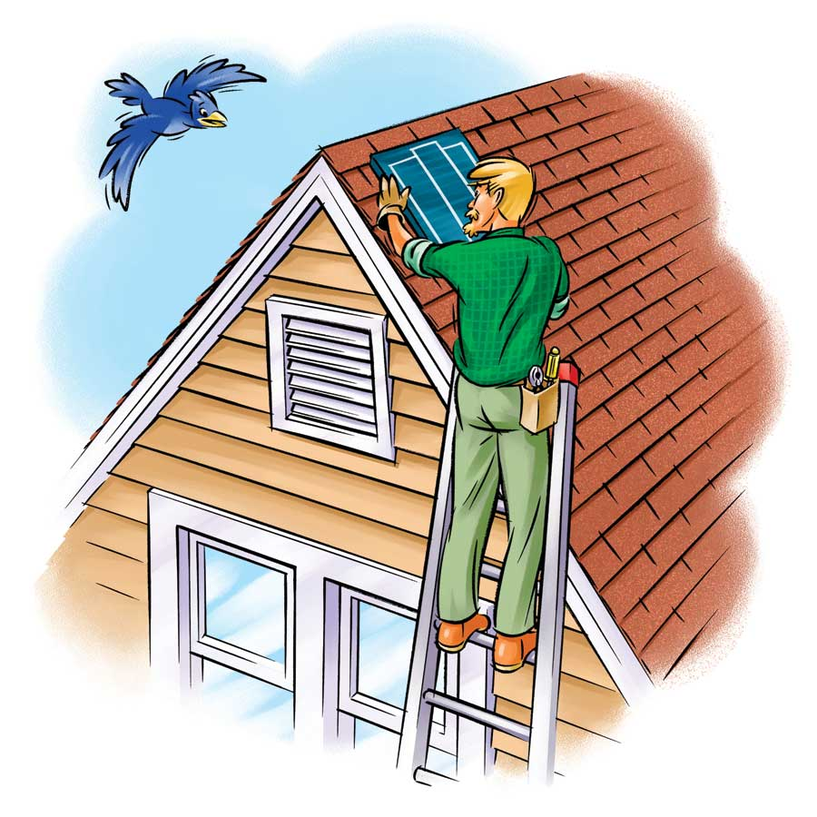

One of the easiest ways to keep your cool in the summer is to use fans. In addition to moving air around, which makes us feel cooler, fans can, if properly located, purge heat from a house and draw in cool outside air. Moreover, fans use less energy than central air conditioners and evaporative coolers, and are less expensive to install. Fans can dramatically lower utility bills by reducing the need to use air conditioning.
Follow these links for information on specific fan types:
Ceiling Fans: A Simple Cooling Method
Solar Attic Fans: Cool Your Attic and Your Home
Whole-house Fans: Easy, Low-cost Cooling
A regular attic fan uses electricity, but saves about 10 percent on air conditioning costs by keeping your attic (and, as a result, the living space below it) cooler. Solar-powered attic fans have a higher initial cost.
A ceiling or portable floor fan will cut your energy costs if you have central air conditioning - if you raise the thermostat setting. For every degree you turn it up, you will cut 7 to 10 percent from your cooling costs.
Using a whole-house fan - instead of air conditioning - when the temperature cools off in the evening and early morning hours can save significantly on energy costs. Not only does a whole-house fan cost less to run than air conditioning, but it can cool a house down in just a few minutes, after the outside air temperature has decreased.
Ceiling and Attic Fans
Cost Estimate: Installation of two ceiling fans and two solar attic fans, controls and wiring.
Ceiling fans range from: $45 to $700
Attic fans start around: $90
Solar attic fans cost between: $300 and $700
Cost for materials only: $750
Contractor’s total, including materials, labor and markup: $1,500
Whole-house Fans
The materials cost (whole-house fan and other supplies) can be anywhere from about $300 to more than $1,200
Cost Estimate: Installation of a whole-house fan, including a high-quality 36-inch-square, 6,500-cubic-feet-per-minute (cfm), two-speed fan with switch, wiring and new circuit breaker, as well as an allowance for framing and drywall repair materials.
Contractor’s total, including materials, labor and markup: $1,450
Costs are national averages and do not include sales tax. If you have a contractor do several small projects at once, you’ll save money overall.
|
 KEITH WARD Some solar attic fans exhaust hot attic air out through the gable-end vent. The photovoltaic panel that powers the fan is on the roof. |
|
|